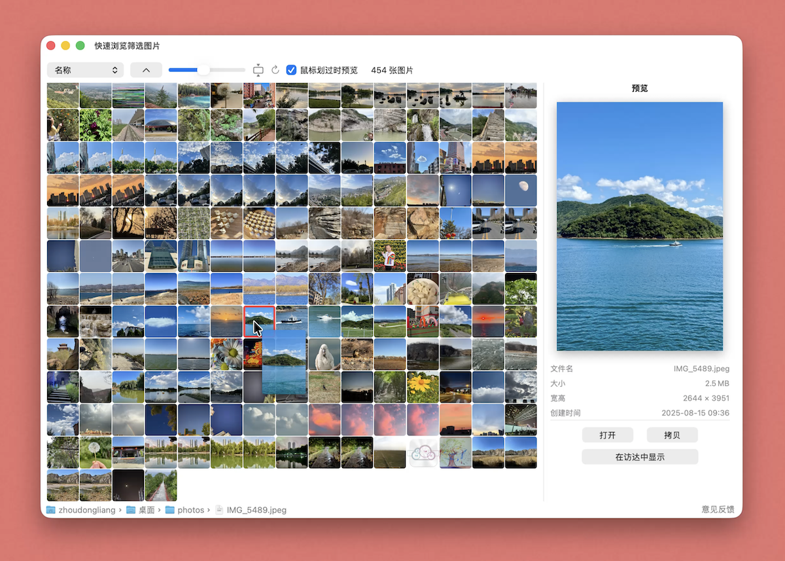

Photo Quick Preview
照片快速预览
Photo Quick Preview

功能介绍
Features
在这个信息爆炸的时代，处理海量图片不应再成为效率的瓶颈。
App专注于图片浏览和整理，解决的是一个简单的问题：如何更快速地查看和管理本地图片。
为了让操作尽可能直观，通过双栏布局，你可以通过底部的滑块随时调整图片大小，鼠标划过即可预览，无需反复点击打开。
希望能帮到同样追求高效的你。

- 快速预览：鼠标悬停显示图片，支持 GIF 动图播放。
- 高效交互：键盘方向键即可移动光标，双击直接打开；支持反向拖拽，可以直接把图片拽到其他文件夹中。
- 批量处理：支持多选进行删除、拷贝或显示信息，点选图片即可直接复制。
- 便捷管理：提供名称、创建时间、大小等排序方式（支持正反序）。
- 常规操作：右键菜单涵盖了打开、拷贝、删除和显示简介等基础功能。
In this era of information overload, managing a massive number of images shouldn't slow you down.
This app is designed to solve a simple problem: how to view and organize your local images as quickly as possible.
For an intuitive experience, I’ve used a dual-pane layout. You can adjust thumbnail sizes with the slider at the bottom, and preview images simply by hovering over them—no more endless clicking.
I hope this tool helps you stay efficient.
- Quick Preview: Preview images on hover; supports GIF playback.
- Efficient Interaction: Navigate with keyboard arrow keys, double-click to open, and drag-and-drop to other folders.
- Batch Processing: Multi-select to delete, copy, or get info. Copy images instantly with a single click.
- Simple Management: Sort by name, date created, or size (ascending/descending).
- Essential Operations: Right-click menu for quick access to Open, Copy, Delete, and Get Info.